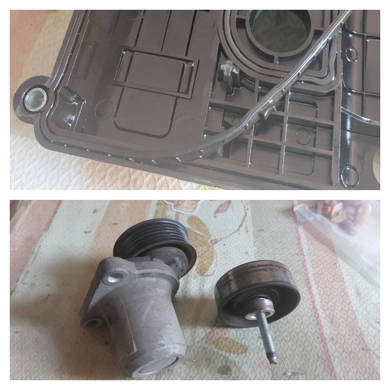
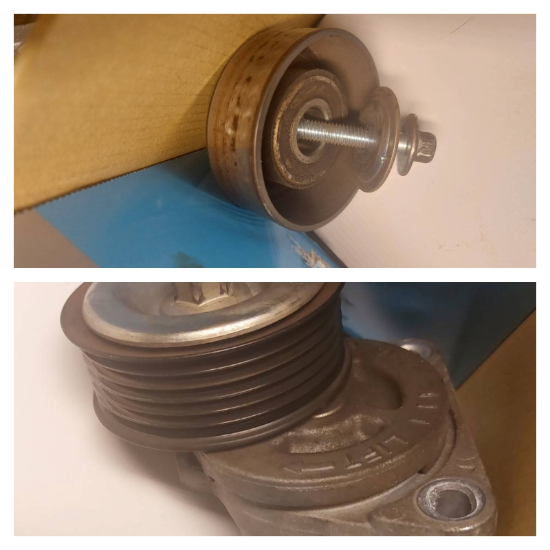
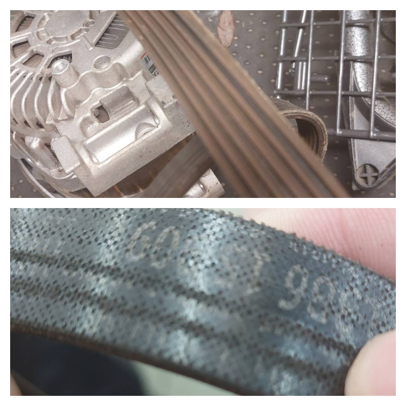
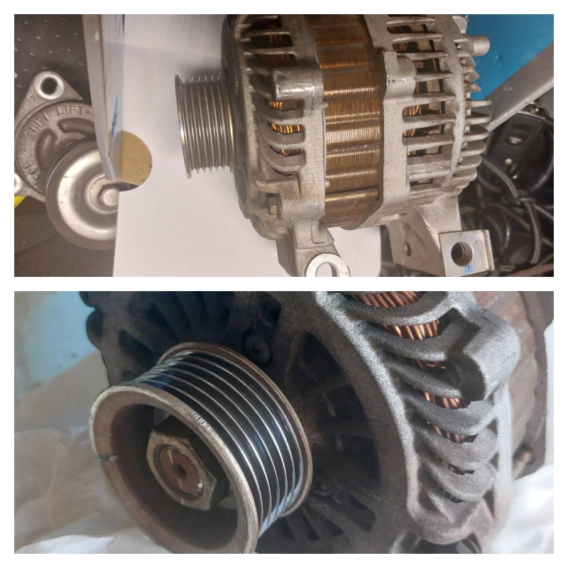
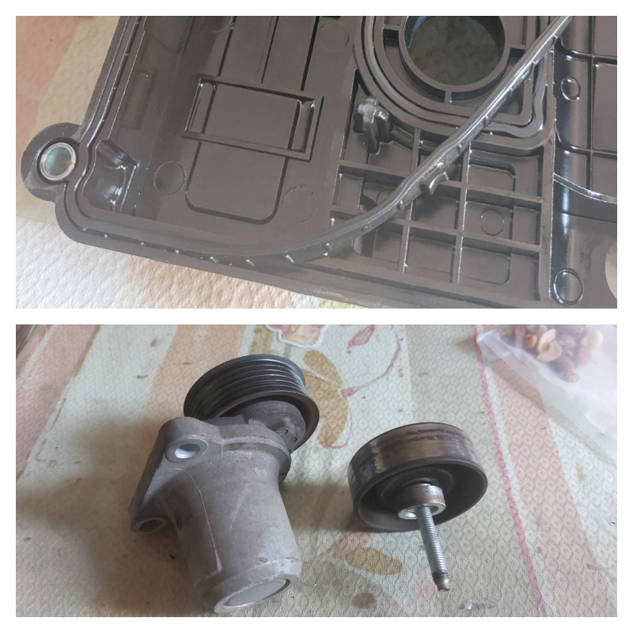
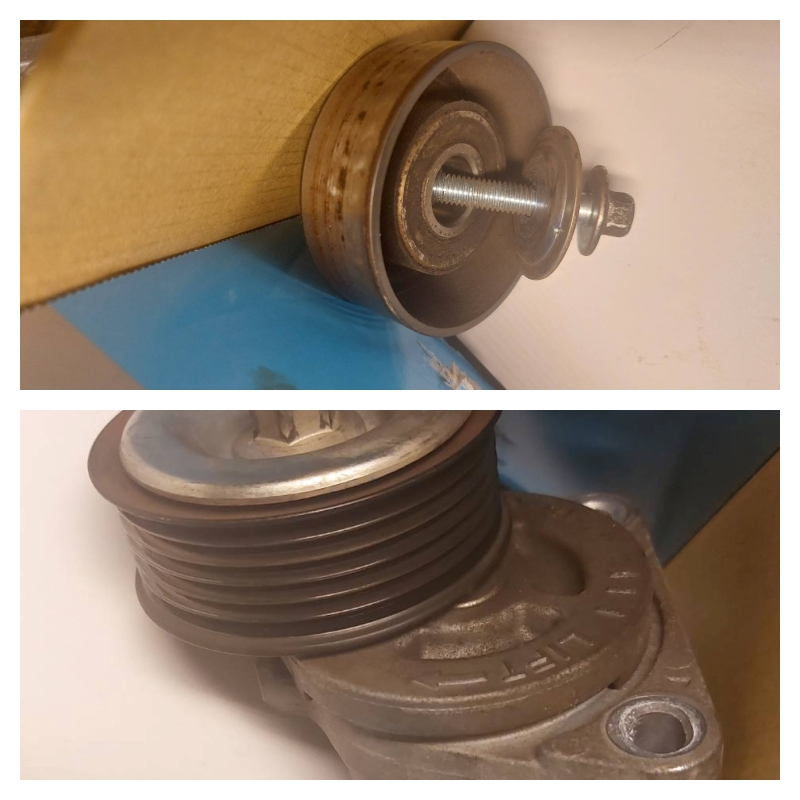
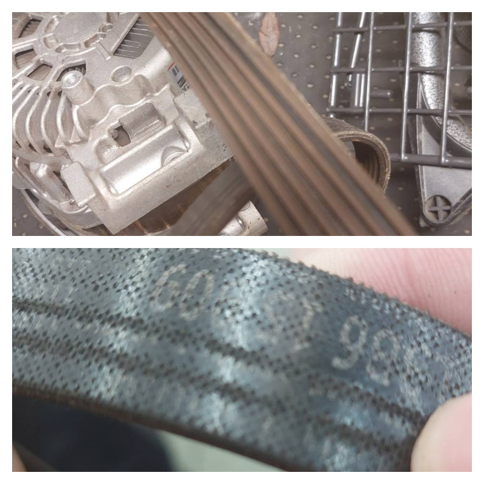
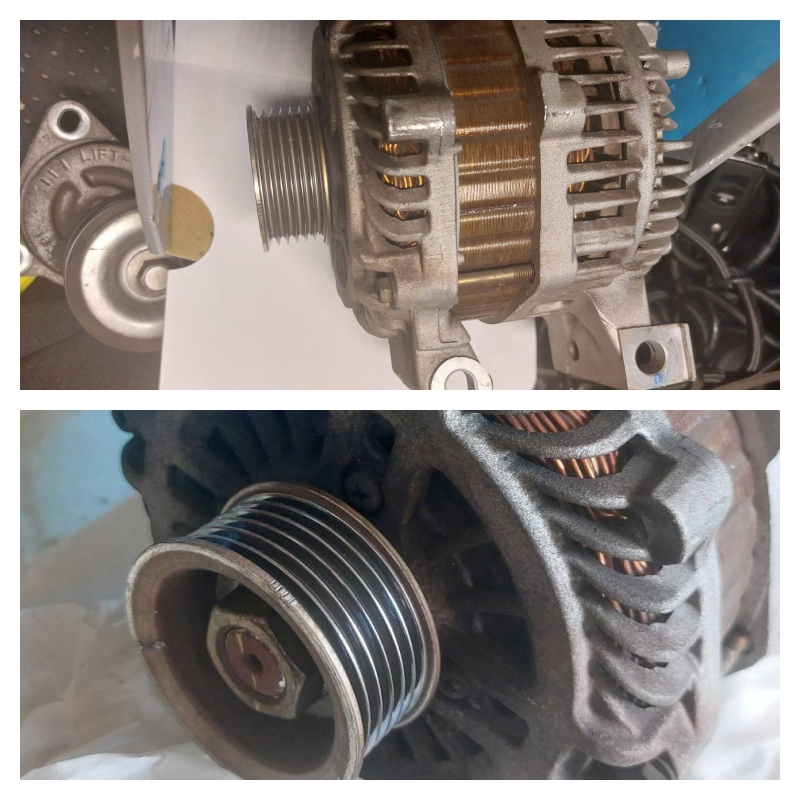

一整天從保養變成大維修連鎖反應！
某個週末，我開著 Ford Escape 回到一直以來固定保養的「旭益汽車文新店」，原本只是想換個機油，結果卻從早上修到傍晚，變成一場讓人懷疑人生的「多米諾式大維修」。
最後的帳單竟然超過 4 萬元。
第一階段：從機油滲漏開始的第一張骨牌
技師打開引擎蓋說：
👨🔧：「機油有滲漏，這邊表面都有油污。我建議你要換整組汽門蓋加墊片，大概13,000元。」
我問：「可以只換墊片嗎？」
👨🔧：「這是一整組的喔，沒辦法分開。再加上你里程數也差不多到了，塑膠老化了啦。」
因為現場確實看到油漬，加上這家店是我一直固定來的，我就同意了。
但事後上網查才發現，墊片其實是可以單換的，這讓我開始意識到：
❗就算是常去的保養廠，也不能完全放心，還是要保有懷疑與查證的空間。
第二階段：連環電話式「追加維修」
我把車留下回家處理事情，沒想到接下來一整天就像被電話追著跑，每通都在問：「要不要換？」聽完每一項問題都感覺關乎生死，不修似乎就等著拋錨。
而我也幾乎每通都答應了，因為「安全第一」──我不想冒風險。
📞 第一通：皮帶磨損
👨🔧：「王先生，我們發現皮帶有磨損，這樣開一開可能會斷掉，到時候車就不能動囉。」
💸：報價 2,800 元
📞 第二通：惰輪有問題
👨🔧：「它會影響整個皮帶的帶動系統。磨損了，建議是要換啦，不過還是看你。」
📞 第三通：惰輪固定也壞了
👨🔧：「固定惰輪的地方也鬆動，有問題。」
📞 第四通：發電馬達輪軸問題
👨🔧：「壞消息是你的發電馬達輪軸壞了；好消息是我們剛好有現貨！」
👨🔧：「會飛出來喔，到時整台車沒電，因為現在都是電子控制，會直接當機！」
🌀 快傍晚了，我還要趕去接小孩，也沒時間多問，只能結帳帶車走。
第三階段：回家確認照片聽音檔查資料，越查越心驚
我冷靜下來後仔細查了一下，才發現問題不只一個，而是整個流程設計、檢修邏輯與報價方式，都有問題：
❓問題一：發電馬達問題應該一開始就能發現
真的有問題儀表板電池燈亮、啟動無力、異音都是警訊，但為何沒有？
那技師說是因為「輪軸異音」要換馬達，怎麼不是一開始？為什麼修到最後才「突然發現」這麼嚴重的問題？
❓問題二：分段報價、分段施壓
皮帶＋惰輪＋固定座＋馬達應是一組，卻被分成四次報價與壓力點。
但現場卻被拆成四次發現、四次報價、四次壓力決策。
這種「溫水煮青蛙式」的溝通，讓人越來越難拒絕。
❓問題三：工時重疊卻重複計費
同一區塊維修卻拆分工資，總費用自然偏高。
合理維修應具備的標準
- ✅ 事前檢測清楚，提供照片或影片佐證
- ✅ 解釋清楚以目前狀況影響與後果，而不是「看你要不要換」
- ✅ 明確標示「可等一下」、「需即刻處理」、「可觀察」等分級建議
- ✅ 同系統項目應合併報價，工時分明
- ✅ 給顧客查詢與思考時間
是技師問題，還是體系問題？
我後來回想，當我提出疑問時，技師總會說：
👨🔧：「我有問你啊，是你自己同意的。」
這句話表面合理，但實際對話中，我是在資訊不足、時間急迫、被動應對的情境下被動選擇。
我懷疑：是不是技師們為了達成業績，有「今天能換的就趕快換」的壓力？
甚至當我堅持要拿回舊馬達時，技師還說：「這是公司要回收的。」
但根本沒提前問我是否要保留，若我沒堅持，也就被收走了。
結語：信任是累積出來的
當我問「為什麼這麼多要換」，技師回：「我有問你啊，是你自己同意的。」
這句話看似合情合理，實際卻是在資訊不對等、時間急迫中，讓我無從判斷。
真正讓人信任的維修廠，應該是願意解釋、不急於成交、有透明依據。
我不是不願意花錢修車，而是希望這筆錢花得安心、有道理。
🚘 到底該不該去旭益保養維修？｜一份來自實際經驗的提醒與建議
你可能只是想換個機油，卻沒想到走出門時帳單破萬、腦中滿是問號。這就是我在旭益汽車（文心門市）的一段經歷。
這篇文章不是要告訴你「不能去旭益」，而是希望透過我的親身經驗，幫助你在做決定前多一點警覺、多一份準備。
🧭 結論先說：到底要不要去旭益？
看個人，但請務必保持高度警覺。
- ✅ 小型保養（如換機油）通常沒什麼問題
這類消費項目本就是日常會遇到的，只要有做功課、知道行情、觀察態度，其實是很好的觀察起點。
- 💡 強烈建議同時尋找其它保養廠當備案
口袋名單多一點，遇到狀況才有空間比價與查證，不會陷入「只能接受」的窘境。
🛠️ 制度觀察｜旭益文心門市的爭議經驗
我這次的保養從「單純換機油」開始，現場技師卻指出機油滲漏，進而建議一連串零件更換，總價破萬。
整體觀察下來，我產生幾個疑問：
- 話術一致、流程同步：技師回應都如同訓練過般一致，讓人懷疑這不是個別技師的專業判斷，而是公司內部有某種「推進話術」或「銷售流程」。
- 現場處理方式高度一致：無論提出什麼疑問，回答方式都朝著「推進維修」的方向走，讓人難以退場或靜下心來判斷。
❌ 跨門市詢問卻被拒絕？這些行為令人錯愕
因對文心店的建議存疑，我到旭益太平門市想再確認車況。
沒想到：
- 技師一開始願意回應，但當主管查到我曾在文心店維修後，立刻打斷並拒絕提供任何技術說明。
- 對我說：「我知道你在文心店修的，不適合再來問。」
- 更出現令人不安的言語紀錄：
- 在文心店時被說：「你上次也花了一萬多，為什麼現在才問這麼多？」
- 在太平店被說：「我們知道你在哪裡維修的。」
這些行為讓我聯想到：
- ❓旭益內部是否存在跨門市分區文化？一家接手的顧客，其它門市就不歡迎？
- ❓所謂「流程都一樣」的說法，是否表示每家門市都有相似銷售話術？
- ❓是否有濫用客戶個資？不同門市卻能即時得知維修紀錄，是否越界使用客戶資料？
令人意外的是，在主管出面前，技師其實解說得中肯，某種程度讓我放下了疑慮，因此也仍願意對該技師表達感謝。
📝 問卷制度只是形式？售後完全無回應
維修完後我收到滿意度問卷，當時明確表示對文心店經驗不滿意，但至今未收到任何形式的回覆或處理。這讓人懷疑：
👉 「顧客回饋」只是制度擺樣，實際並不關心顧客反饋或改善流程。
✅ 給車主的建議｜讓你不只是「被修」而是「會選擇」
- 從基礎保養中建立觀察與信任：
初次接觸可從換機油等小項目開始，觀察報價是否清楚、過程是否合理、服務是否尊重顧客。一次不要做太多，觀察久一點更有依據。
- 面對高額維修，一定要「停、看、聽」：
當聽到要換零件、費用跳升到數千甚至破萬時，請立刻要求報價明細、詳細解釋，然後離場查證。別被現場氣氛或壓力推著走。
- 日常累積資訊，增加判斷力：
平常多了解常見零件壽命、維修價格行情與常見診斷方式，到了現場就比較不會被「專業話術」牽著走。
🔚 結語：主動才有選擇，被動只會後悔
這不是一篇抱怨文，而是來自一次完整經驗的理性整理。我要說的只有一句話：
❗ 顧客不是越配合就能獲得好服務，而是越懂得提問與查證，才能保護自己與愛車。
讓我們都做個有準備的車主，才能在保養過程中，真正做到「安心、理性、不後悔」。
 






